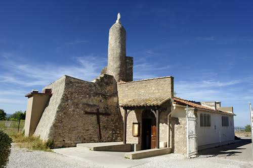

Mont Saint-Clair
à SèteLe belvédère de l'île singulière


⟹ Sites Emblématiques ⟸
Le mont Saint-Clair est le relief fondateur de Sète. Cette masse de calcaire jurassique, isolée entre la Méditerranée et l’étang de Thau, culmine à un peu plus de 170 mètres et domine un littoral longtemps composé de lagunes, de graus et de cordons sableux. Avant même la naissance de la ville moderne, sa silhouette constituait un amer naturel visible de loin par les navigateurs. Le mont, autrefois presque insulaire, a joué un rôle essentiel dans le choix du site portuaire.
L’origine du nom de Sète a suscité plusieurs interprétations au fil du temps, et les formes anciennes — Cette, Seta, Ceta — ont nourri le rapprochement traditionnel avec la silhouette du mont évoquant une baleine. Cette image est devenue un élément durable de l’imaginaire sétois, même si l’étymologie exacte demeure discutée. Le relief est en tout cas indissociable de l’identité visuelle de la ville.

Bien avant la fondation du port de Sète, le sommet sert de poste d’observation et de refuge. La tradition religieuse y est également ancienne : un ermitage ou un lieu de dévotion consacré à saint Clair est attesté au Moyen Âge. La hauteur permet de surveiller simultanément le golfe du Lion, le lido et l’étang de Thau, ce qui explique la succession d’installations militaires, de signaux et de postes de guet.
Au XVIIe siècle, la monarchie cherche à créer sur cette côte un port capable de soutenir le commerce du Languedoc et de donner un débouché maritime au futur canal du Midi. Après plusieurs projets, les travaux du port de Sète commencent en 1666 sous le règne de Louis XIV. Le mont Saint-Clair devient alors l’arrière-plan naturel d’une ville nouvelle qui se développe autour des quais et des canaux. Sa pierre calcaire est exploitée, tandis que ses pentes accueillent progressivement chemins, cultures et habitations.
Le sommet conserve une fonction stratégique. Un fortin, souvent associé au nom de Montmorency ou « Montmorencette », y est établi à l’époque moderne sur un emplacement de surveillance plus ancien. Les dispositifs de signalisation maritime et militaire évoluent ensuite avec les besoins de la navigation et de la défense côtière. Au XIXe siècle, le développement du port, du chemin de fer et de la ville renforce encore l’importance du mont comme point de repère.
La chapelle Notre-Dame-de-la-Salette est établie au sommet dans les années 1860, sur l’emplacement de l’ancien fortin. Sa dédicace fait référence à l’apparition mariale rapportée le 19 septembre 1846 à La Salette, dans l’Isère. Le sanctuaire sétois devient rapidement un lieu de pèlerinage ; la tradition d’une célébration le 19 de chaque mois, et plus particulièrement le 19 septembre, s’enracine durablement. Le sommet associe dès lors fonctions de belvédère, mémoire militaire et dévotion populaire.
La tour voisine, souvent prise pour un clocher, rappelle les usages de mesure et de signalisation du sommet. Un sémaphore a également occupé les lieux avant d’être détruit pendant la Seconde Guerre mondiale, en 1944. Le mont Saint-Clair, dominant un port stratégique, est alors directement concerné par les dispositifs militaires du littoral méditerranéen.
Après-guerre, la chapelle reçoit un décor remarquable : en 1952, le peintre biterrois Jacques Bringuier réalise des fresques modernes qui donnent au sanctuaire son atmosphère singulière. Les ex-voto déposés par des marins, pêcheurs et familles sétoises rappellent combien la dévotion du sommet est liée aux dangers de la mer et à la culture maritime de la ville.
Les pentes du mont ont elles aussi une histoire. Longtemps occupées par des vignes, des jardins, des murets de pierre sèche et des petites constructions, elles se couvrent progressivement de villas aux XIXe et surtout XXe siècles. Dans la culture locale, les modestes cabanes où les familles venaient passer du temps sur le mont ont participé à un art de vivre typiquement sétois. L’urbanisation a transformé le relief sans effacer totalement cette trame de chemins, terrasses et végétation méditerranéenne.
Aujourd’hui, le belvédère du mont Saint-Clair permet de comprendre d’un seul regard la géographie qui a fait Sète : à l’est la Méditerranée, au nord l’étang de Thau, au sud-ouest le lido et, en contrebas, la ville-port traversée de canaux. Le mont résume ainsi plusieurs siècles d’histoire : amer des navigateurs, poste de défense, lieu de pèlerinage, territoire de cultures et de villégiature, puis balcon emblématique d’une cité dont le destin est entièrement lié à la mer et à la lagune.
Sur son flanc nord-ouest, la forêt domaniale des Pierres Blanches, autrefois pâturée et couverte de vignes jusqu'en 1920, a été partiellement replantée en pins et cèdres à partir de 1963. Entre pinède et garrigue, on y recense environ 400 espèces végétales, dont la barbe de Jupiter et la gagée, un petit crocus à fleur jaune protégé.
De la table d'orientation, un panorama circulaire embrasse les Cévennes, le massif de la Gardiole, l'étang de Thau et, par temps clair, la chaîne des Pyrénées jusqu'au Canigou.
— Panorama du sommet du Mont Saint-ClairCôté étang, le regard porte sur les neuf communes riveraines de la lagune de Thau, ses parcs à huîtres et moules de Bouzigues et Loupian, et jusqu'à Balaruc-les-Bains sur sa presqu'île thermale.
Centre-ville de Sète canaux, pointe courte, marché aux poissons et quartier haut, à explorer à pied depuis le pied du mont.
Cimetière marin tombe de Paul Valéry et vue sur la mer, sur le versant sud du mont Saint-Clair.
Étang de Thau visible depuis le sommet, à explorer côté Bouzigues, Mèze ou Balaruc-les-Bains.
Cap d'Agde et Mont Saint-Loup à une trentaine de minutes, pour prolonger la découverte du littoral volcanique héraultais.